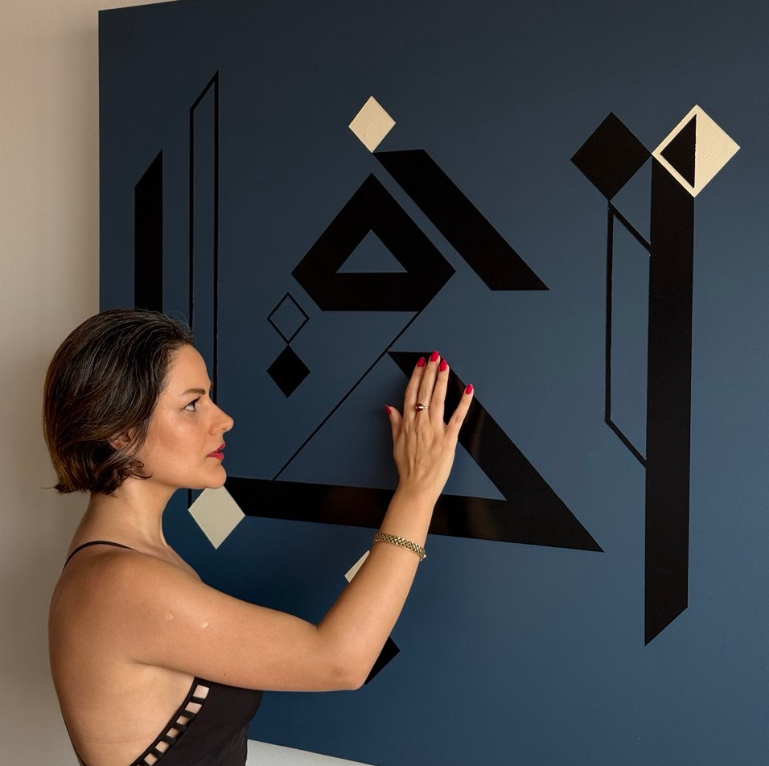

The Conceptual Foundations of Augmented Painting

Throughout the twentieth century, painting remained fundamentally a visual medium. Whether figurative or abstract, static or digital, its primary mode of engagement was observation. At the same time, contemporary technology increasingly relocated human experience behind screens, creating interfaces optimized for information and consumption rather than relationship. At Perceptrum², our work emerged from a simple question: what would happen if a painting could become an interlocutor rather than an image?
Beyond Object and Immersion
With Sounding Canvas, we propose the concept of Augmented Painting. This is not a technological enhancement of traditional painting. It is a philosophical repositioning of what painting can become in a post-immersive era.
Historically, painting has occupied one of two conditions. It has either existed as a contemplative object, intended to be viewed from a distance, or it has been absorbed into immersive environments where the spectator becomes surrounded by an experience.
Augmented Painting proposes a third state. Neither purely object nor immersive environment, but a responsive surface that mediates between image, body, and sound. In this framework, the painting is no longer passive. It listens. It remembers. It responds. It carries semantics. It becomes what we call a Relational Object.
The Painting as Encounter
In traditional painting, the body stops at the eyes. In immersive environments, the body is often swallowed by space. In Augmented Painting, meaning is negotiated through touch.
The viewer does not merely observe the work but participates in its unfolding behavior. Touch becomes an epistemic act. Perception becomes dialogical. Interpretation becomes action. The painting is not simply seen. It is encountered.
Relationship as Intelligence
Underlying this artistic position is a broader philosophical conviction. We believe that relationship lies at the core of what we call consciousness, intelligence, and ultimately life itself. Intelligence does not reside in a single agent. It emerges from systems of interaction. Meaning is co-constructed through response. Identity is shaped through connection. In this sense, we are not isolated entities but phenomena emerging from the networks to which we belong. We are what arises from the framework of our relationships.
Toward a New Artistic Category
Through Augmented Painting, Perceptrum² is not proposing a technique. We are opening a category. Our ambition is to contribute a language through which artists, curators, critics, and historians may discuss works that operate between image, body, sound, and responsive behavior. Just as installation art, performance art, and sound art became recognizable artistic territories, we believe that works built upon relational interaction may eventually be understood as belonging to the language of Augmented Painting. Sounding Canvas represents the first expression of this research.